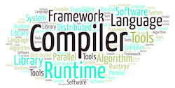

is a tenured full professor in the Elmore Family School of Electrical and Computer Engineering at Purdue University, and the Director of the Intelligent Software & Systems Center at Purdue. He joined Purdue in July 2026 as part of Purdue's Moveable Dream Hires Program. He was a tenured full professor in Computer Science at North Carolina State University (NCSU) between 2014 and 2026, and an Adina Allen Term Distinguished Associate Professor at the College of William and Mary before then. He received his Ph.D. from University of Rochester in 2006. He leads the PICTure research group.
lies in the broad fields of Programming Systems and Machine Learning, with an emphasis on enabling extreme-scale data-intensive computing and intelligent computing through innovations in compilers,runtime systems, and Machine Learning algorithms. As a pioneer in manycore and GPU code compilation and optimizations, his research has influenced the development of modern heterogeneous programming systems and machine learning systems. His contributions to the field have been recognized through
awards such as the DOE Early Career Award, NSF CAREER Award, Google
Faculty Research Award, and IBM CAS Faculty Fellow Award, alongside
the NCSU University Faculty Scholars Award. His research has been sponsored by NSF, DOE, NIH, and USDA. He is an ACM
Distinguished Member, ACM Distinguished Speaker, and
IEEE Fellow (2026).
In addition to his academic pursuits, Dr. Shen co-founded CoCoPIE Inc., a company dedicated to enhancing AI deployment. He has been a consultant or member of the advisory boards to several leading IT companies, including Intel, Microsoft, Cisco, Meta.
